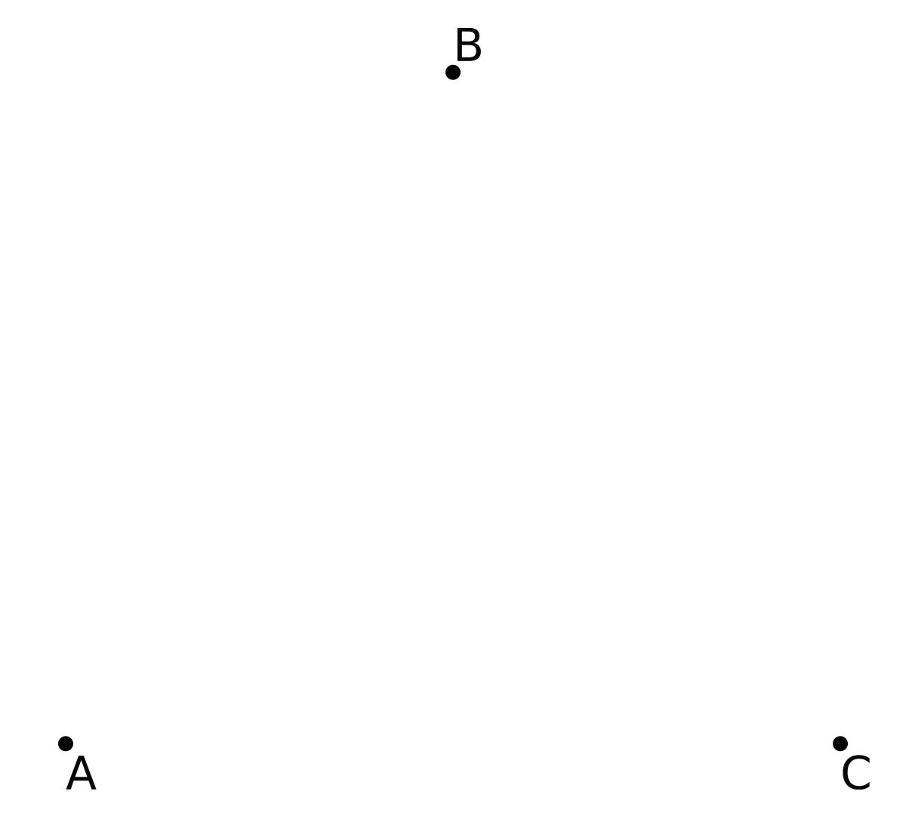

Iterated Function Systems
A few quick notes before we start:
For this chapter, we will be following the methodology set by the plotting chapter. That is to say that the code presented in this chapter will output another file that can be easily plotted by an external plotter. If you like to use a plotter provided by your language of choice, please modify the code provided to do so.
This chapter is currently a subsection to the plotting chapter, but we may extend the algorithm archive in the future with other fractal generation methods, which would require creating a new section on fractals, in particular. This would include a chapter with more rigorous definitions on fractals, which is largely missing from the following discussion. Please let us know if you are interested!
In this chapter, we will show you how to make one of the most famous fractals, the Sierpinski triangle, via Iterated Function Systems (IFSs). We will also introduce a number of interesting concepts for further exploration, such as chaos games, Hutchinson operators, and attractors.
The Sierpinski Triangle
To begin the discussion of Iterated Function Systems (IFSs), we will first discuss what might be one of the most famous fractals currently known: the Sierpinski triangle (shown below):

This image is clearly a set of triangles embedded in a larger triangle in such a way that it can be continually cut into three identical pieces and still retain its internal structure. This idea is known as self-similarity [1], and it is usually the first aspect of fractals to catch an audience's attention. In fact, there are plenty of uses of fractals and their mathematical underpinnings, such as estimating the coastline of Britain [2], identifying fingerprints [3], and image compression [4][5]. In many more rigorous definitions, a fractal can be described as any system that has a non-integer Hausdorff dimension [6][7][8]. Though this is an incredibly interesting concept, the discussion of this chapter will instead focus on methods to generate fractal patterns through iterated function systems.
To start, imagine creating a triangle from three points, , , and . These points can be arbitrarily chosen, but for this conversation, we will constrict them to the vertices of an equilateral triangle, as shown below:

Now let's create three separate functions that can act on a 2-dimensional space:
Each function will read in a particular location in space (here, ) and output a new location that is the midpoint between the input location and , , or for , , and respectively. The union of all of these functions (the set of all possible functions available for use) is often notated as the Hutchinson operator [9][10], and for this case it would look like this:
By iteratively using this operator, we can traverse through all possible movements in the set. For example, let's generate 3 new points that are halfway between and , and , and and , which will be called , , and respectively. This is shown below:

From here, each new point (, , and ) will spawn 3 children, and each child will move according to one of the three possible functions in the Hutchinson operator, as shown below:
Here, all red children come from , green children come from and blue children come from . At this stage, the children will then spawn 3 more children, each of which will move according to a different function. Those children will then spawn more children, who act accordingly. As this process continues on and on, we begin to see an interesting pattern form:
This is the Sierpinski triangle. At first, it might seem like mathematical magic that a simple set of 3 functions can create such a pattern. After all, why aren't any of the children migrating to the empty spaces in the structure? This will require some thought, but the simplest answer is that no function within the Hutchinson operator allows for children to enter those spaces; therefore, none of the children can enter them.
What about a square?
When I learned about how the Sierpinski triangle could be generated from 3 simple functions, I began to wonder about other shapes. Could we create fractal squares? Hexagons? Circles? Such shapes seem like natural extensions to the triangular Hutchinson operator provided above, but there's a bit of a hitch...
First, let's take 4 points, , , , and , this time located at the four vertices of a square, like so:

In a similar fashion, we'll create 4 functions with , and such that:
If we then create 5 initial points located between all the vertices and allow these points to continually spawn children like before, something peculiar happens:
We essentially see a square of squares. What happened to the self-similar structure we were getting before? Why isn't this more interesting?
The best answer I have for now is that some Hutchinson operators are interesting and some are not. Still, this square is a bit more interesting than it first appears, but to see why, we need to use the Hutchinson operator in a slightly different way.
Chaos games and attractors
Until now, our visualizations for both the Sierpinski triangle and the square have been computationally costly. Every iteration, we generate 3 or 4 new children per child per step of the simulation. This scales exponentially and means that we will quickly have millions of children to keep track of! In fact, to deal with this, we developed our own method of counting through the tree to more efficiently keep track of everything, but that is a story for another day.
The question for now is whether there is a more computationally feasible way of iterating through our Hutchinson operator.
As it turns out, there is! Rather than keeping track of every possible movement within the Hutchinson operator to draw out a shape, it's actually possible to randomly sample the function set instead through a process known as a chaos game [11][12].. Here, instead of tracking children of children, we track a single individual that chooses randomly between the Hutchinson functions, as shown here:
function chaos_game(n::Int, shape_points)
# Initializing the output array and the initial point
output_points = zeros(n,2)
point = [rand(), rand()]
for i = 1:n
output_points[i,:] .= point
point = 0.5*(rand(shape_points) .+ point)
end
return output_points
end
chaosGame :: RandomGen g => g -> Int -> Array Int (Point -> Point) -> [Point]
chaosGame g n hutchinson = take n points
where
(x, g') = random g
(y, g'') = random g'
choices = randomRs (bounds hutchinson) g''
points = Point x y : zipWith (hutchinson !) choices points
// This is a function to simulate a "chaos game"
PointVector chaosGame(int numOutputPoints, const PointVector& inputPoints) {
// Choose first point randomly
Point curPoint = {drand(), drand()};
// For each output point, compute midpoint to random input point
PointVector outputPoints(numOutputPoints);
for (auto& outPoint : outputPoints) {
outPoint = curPoint;
curPoint = 0.5 * (curPoint + choose(inputPoints));
}
return outputPoints;
}
def chaos_game(n, shape_points):
# Initialize the starting point
point = [random(), random()]
for _ in range(n):
# Update the point position and yield the result
point = [(p + s) / 2 for p, s in zip(point, choice(shape_points))]
yield point
void chaos_game(struct point *in, size_t in_n, struct point *out,
size_t out_n) {
struct point cur_point = {drand(), drand()};
for (int i = 0; i < out_n; ++i) {
out[i] = cur_point;
struct point tmp = random_element(in, in_n);
cur_point.x = 0.5 * (cur_point.x + tmp.x);
cur_point.y = 0.5 * (cur_point.y + tmp.y);
}
}
(defun chaos-game (iterations shape-points)
"Plays a chaos game with a certain shape for a determined amount of iterations"
(loop
repeat iterations
for rand-point = (svref shape-points (random (length shape-points)))
for point = (make-point (random 1.0) (random 1.0)) ; starting point
then (make-point
(* 0.5 (+ (point-x rand-point) (point-x point)))
(* 0.5 (+ (point-y rand-point) (point-y point)))) ; every subsequent point
collect point))
data point(x=0, y=0):
def __add__(self, other):
return point(self.x + other.x, self.y + other.y)
def __rmul__(self, other):
return point(self.x * other, self.y * other)
def chaos_game(n, shape_points):
p = point(random(), random())
for _ in range(n):
p = (1/2) * (p + choice(shape_points))
yield p
public static Point[] chaosGame(int n, Point[] shapePoints) {
Random rng = new Random();
// Initialize output vector
Point[] outputPoints = new Point[n];
// Choose first point randomly
Point point = new Point(rng.nextDouble(), rng.nextDouble());
for (int i = 0; i < n; i++) {
outputPoints[i] = point;
// Clone point to get a new reference
point = new Point(point.x, point.y);
// Retrieve random shape point
Point temp = shapePoints[rng.nextInt(shapePoints.length)];
// Calculate midpoint
point.x = 0.5 * (point.x + temp.x);
point.y = 0.5 * (point.y + temp.y);
}
return outputPoints;
}
If we set the initial point to the on the equilateral triangle we saw before, we can see the Sierpinski triangle again after a few thousand iterations, as shown below:
Here, we are plotting 200,000 point locations in sets of 1000, and every set becomes successively more blue as the visualization continues. At first glance, this visualization seems bewildering. After all, it appears as if the entire triangle just magically comes into view in a few seconds. The important thing to remember here is that each of these 200,000 dots is another location that our initial point decided to visit.
That said, there is something peculiar about the way the chaos game starts. We are actually allowed to start the simulation off of the Sierpinski triangle. As we mentioned earlier, none of the functions for the Sierpinski visualization allow children to enter the empty spaces of the triangle, so let's see what happens if we start the point off at the center of the triangle:
Here, I have plotted the first 20 steps of the chaos game, and it is clear that the point gets closer and closer to the triangle each iteration. Once it lands on the triangle, it can no longer escape and every movement from then on will be on the triangle.
In a sense, the wanderin point is attracted to the Sierpinski triangle with this set of functions, and that is actually the case! The truth is that the word attractor is a very loaded term in the literature, but for the purposes of our discussion here, an attractor is any shape defined by the iteration through Hutchinson operator functions.
So let's go back to the example with the 4 points along the square and generate the attractor via a chaos game instead of going through every branch of the Hutchinson operator. If we do this, we get what seems to be a random distribution of points:

This kinda boggled my mind a bit when I looked at it for the first time. What does a random distribution of points mean in this context?
Well, firstly, it's only a random distribution between the square vertices of , , , and , but nothing exists outside of these points. This means that it's not actually a random distribution of points, but instead an attractive plane that our lone wandering point can exist happily within.
This really helped me understand how attractors present themselves in different dimensions. The Sierpinski triangle seems like a series of lines (one-dimensional objects) in two-dimensional space, but the square is a truly two-dimensional object. In general, this means that an attractor embedded within can be any shape of dimension N or lower.
The next obvious question is whether a square can create any more interesting fractally patterns, and the answer is "yes, but only if we restrict the movement a bit." Which brings us to another topic entirely: restricted chaos games. Discussing restricted chaos games in more detail is a chapter in its own right, so I will forego the discussion here. If you are interested, please let me know and I will be more than willing to add the chapter in the future!
Video Explanation
Here is a video describing iterated function systems:
Example Code
For the code in this chapter, we have decided to write it specifically for the Chaos game, not the hutchinson animations shown at the start of the chapter. This is because that animation is slightly tricky to create and distracts from the overall purpose of this chapter. In addition, we have written the chaos game code to take in a set of points so that it is not hard-coded for the Sierpinski triangle and can be easily extended to other shapes like the square or restricted chaos games, as we mentioned before!
using DelimitedFiles
# This is a function to simulate a "chaos game"
function chaos_game(n::Int, shape_points)
# Initializing the output array and the initial point
output_points = zeros(n,2)
point = [rand(), rand()]
for i = 1:n
output_points[i,:] .= point
point = 0.5*(rand(shape_points) .+ point)
end
return output_points
end
# This will generate a Sierpinski triangle with a chaos game of n points for an
# initial triangle with three points on the vertices of an equilateral triangle:
# A = (0.0, 0.0)
# B = (0.5, sqrt(0.75))
# C = (1.0, 0.0)
# It will output the file sierpinski.dat, which can be plotted after
shape_points = [[0.0, 0.0],
[0.5, sqrt(0.75)],
[1.0, 0.0]]
output_points = chaos_game(10000, shape_points)
writedlm("sierpinski.dat", output_points)
import Data.Array ((!), Array, bounds, listArray)
import Data.List (intercalate)
import System.Random
data Point = Point Double Double
chaosGame :: RandomGen g => g -> Int -> Array Int (Point -> Point) -> [Point]
chaosGame g n hutchinson = take n points
where
(x, g') = random g
(y, g'') = random g'
choices = randomRs (bounds hutchinson) g''
points = Point x y : zipWith (hutchinson !) choices points
main :: IO ()
main = do
g <- newStdGen
let midPoint (Point a b) (Point x y) = Point ((a + x) / 2) ((b + y) / 2)
sierpinski =
listArray
(1, 3)
[ midPoint (Point 0 0),
midPoint (Point 0.5 (sqrt 0.75)),
midPoint (Point 1 0)
]
points = chaosGame g 10000 sierpinski
showPoint (Point x y) = show x ++ "\t" ++ show y
writeFile "out.dat" $ intercalate "\n" $ map showPoint points
#include <cmath>
#include <fstream>
#include <random>
#include <vector>
// Simple X-Y point structure, along with some operators
struct Point {
double x, y;
};
Point operator+(Point lhs, Point rhs) { return {lhs.x + rhs.x, lhs.y + rhs.y}; }
Point operator*(double k, Point pt) { return {k * pt.x, k * pt.y}; }
Point operator*(Point pt, double k) { return k * pt; }
using PointVector = std::vector<Point>;
// Returns a pseudo-random number generator
std::default_random_engine& rng() {
// Initialize static pseudo-random engine with non-deterministic random seed
static std::default_random_engine randEngine(std::random_device{}());
return randEngine;
}
// Returns a random double in [0, 1)
double drand() {
return std::uniform_real_distribution<double>(0.0, 1.0)(rng());
}
// Returns a random integer in [0, numElems-1]
std::size_t randrange(std::size_t numElems) {
return std::uniform_int_distribution<std::size_t>(0, numElems - 1)(rng());
}
// Return a random point from the non-empty PointVector
Point choose(const PointVector& points) {
return points[randrange(points.size())];
}
// This is a function to simulate a "chaos game"
PointVector chaosGame(int numOutputPoints, const PointVector& inputPoints) {
// Choose first point randomly
Point curPoint = {drand(), drand()};
// For each output point, compute midpoint to random input point
PointVector outputPoints(numOutputPoints);
for (auto& outPoint : outputPoints) {
outPoint = curPoint;
curPoint = 0.5 * (curPoint + choose(inputPoints));
}
return outputPoints;
}
int main() {
// This will generate a Sierpinski triangle with a chaos game of n points for
// an initial triangle with three points on the vertices of an equilateral
// triangle.
PointVector inputPoints = {{0.0, 0.0}, {0.5, std::sqrt(0.75)}, {1.0, 0.0}};
auto outputPoints = chaosGame(10000, inputPoints);
// It will output the file sierpinski.dat, which can be plotted after
std::ofstream ofs("sierpinski.dat");
for (auto pt : outputPoints)
ofs << pt.x << '\t' << pt.y << '\n';
}
from random import random, choice
from math import sqrt
# This generator simulates a "chaos game"
def chaos_game(n, shape_points):
# Initialize the starting point
point = [random(), random()]
for _ in range(n):
# Update the point position and yield the result
point = [(p + s) / 2 for p, s in zip(point, choice(shape_points))]
yield point
# This will generate a Sierpinski triangle with a chaos game of n points for an
# initial triangle with three points on the vertices of an equilateral triangle:
# A = (0.0, 0.0)
# B = (0.5, sqrt(0.75))
# C = (1.0, 0.0)
# It will output the file sierpinski.dat, which can be plotted after
shape_points = [[0.0, 0.0],
[0.5, sqrt(0.75)],
[1.0, 0.0]]
with open("sierpinski.dat", "w") as f:
for point in chaos_game(10000, shape_points):
f.write("{0}\t{1}\n".format(*point))
#include <math.h>
#include <stdio.h>
#include <stdlib.h>
#include <time.h>
struct point {
double x, y;
};
double drand() {
return ((double) rand() / (RAND_MAX));
}
struct point random_element(struct point *array, size_t n) {
return array[rand() % (int)n];
}
void chaos_game(struct point *in, size_t in_n, struct point *out,
size_t out_n) {
struct point cur_point = {drand(), drand()};
for (int i = 0; i < out_n; ++i) {
out[i] = cur_point;
struct point tmp = random_element(in, in_n);
cur_point.x = 0.5 * (cur_point.x + tmp.x);
cur_point.y = 0.5 * (cur_point.y + tmp.y);
}
}
int main() {
struct point shape_points [3] = {{0.0,0.0}, {0.5,sqrt(0.75)}, {1.0,0.0}};
struct point out_points[1000];
srand(time(NULL));
chaos_game(shape_points, 3, out_points, 1000);
FILE *fp = fopen("sierpinksi.dat", "w+");
for (int i = 0; i < 1000; ++i) {
fprintf(fp, "%f\t%f\n", out_points[i].x, out_points[i].y);
}
fclose(fp);
return 0;
}
;;;; Iterated Function System implementation
(defstruct (point (:constructor make-point (x y))) x y)
(defun chaos-game (iterations shape-points)
"Plays a chaos game with a certain shape for a determined amount of iterations"
(loop
repeat iterations
for rand-point = (svref shape-points (random (length shape-points)))
for point = (make-point (random 1.0) (random 1.0)) ; starting point
then (make-point
(* 0.5 (+ (point-x rand-point) (point-x point)))
(* 0.5 (+ (point-y rand-point) (point-y point)))) ; every subsequent point
collect point))
(defparameter *shape-points*
(map
'vector
(lambda (e) (apply #'make-point e))
;; the backquote allows us to selectively evaluate (sqrt 0.75) with the comma
`((0 0) (0.5 ,(sqrt 0.75)) (1 0))))
;; output the data to the "out.dat" file
(with-open-file (out "out.dat" :direction :output :if-exists :supersede)
(flet ((format-point (p)
;; this is not very clean, but it's the simplest way to insert a tab into a string.
(format nil "~f~c~f" (point-x p) #\tab (point-y p))))
(format out "~{~a~%~}" (map 'list #'format-point (chaos-game 10000 *shape-points*)))))
from math import sqrt
from random import random, choice
data point(x=0, y=0):
def __add__(self, other):
return point(self.x + other.x, self.y + other.y)
def __rmul__(self, other):
return point(self.x * other, self.y * other)
def chaos_game(n, shape_points):
p = point(random(), random())
for _ in range(n):
p = (1/2) * (p + choice(shape_points))
yield p
# This will generate a Sierpinski triangle with a chaos game of n points for an
# initial triangle with three points on the vertices of an equilateral triangle:
# A = (0.0, 0.0)
# B = (0.5, sqrt(0.75))
# C = (1.0, 0.0)
# It will output the file sierpinski.dat, which can be plotted after
shape_points = [point(0.0, 0.0),
point(0.5, sqrt(0.75)),
point(1.0, 0.0)]
with open("sierpinski.dat", "w") as f:
for p in chaos_game(10000, shape_points):
f.write("{0}\t{1}\n".format(p.x, p.y))
import java.io.FileWriter;
import java.util.Random;
public class IFS {
private static class Point {
double x, y;
public Point(double x, double y) {
this.x = x;
this.y = y;
}
}
// This is a function to simulate a "chaos game"
public static Point[] chaosGame(int n, Point[] shapePoints) {
Random rng = new Random();
// Initialize output vector
Point[] outputPoints = new Point[n];
// Choose first point randomly
Point point = new Point(rng.nextDouble(), rng.nextDouble());
for (int i = 0; i < n; i++) {
outputPoints[i] = point;
// Clone point to get a new reference
point = new Point(point.x, point.y);
// Retrieve random shape point
Point temp = shapePoints[rng.nextInt(shapePoints.length)];
// Calculate midpoint
point.x = 0.5 * (point.x + temp.x);
point.y = 0.5 * (point.y + temp.y);
}
return outputPoints;
}
public static void main(String[] args) throws Exception {
// This will generate a Sierpinski triangle with a chaos game of n points for an
// initial triangle with three points on the vertices of an equilateral triangle:
// A = (0.0, 0.0)
// B = (0.5, sqrt(0.75))
// C = (1.0, 0.0)
// It will output the file sierpinski.dat, which can be plotted after
Point[] shapePoints = new Point[]{
new Point(0.0, 0.0),
new Point(0.5, Math.sqrt(0.75)),
new Point(1.0, 0.0)
};
Point[] outputPoints = chaosGame(10000, shapePoints);
FileWriter fw = new FileWriter("sierpinski.dat");
for (Point p : outputPoints)
fw.write(p.x + "\t" + p.y + "\n");
fw.close();
}
}
Bibliography
License
Code Examples
The code examples are licensed under the MIT license (found in LICENSE.md).
Text
The text of this chapter was written by James Schloss and is licensed under the Creative Commons Attribution-ShareAlike 4.0 International License.

Images/Graphics
- The image "IFS triangle 1" was created by James Schloss and is licensed under the Creative Commons Attribution-ShareAlike 4.0 International License.
- The image "IFS triangle 2" was created by James Schloss and is licensed under the Creative Commons Attribution-ShareAlike 4.0 International License.
- The image "IFS triangle 3" was created by James Schloss and is licensed under the Creative Commons Attribution-ShareAlike 4.0 International License.
- The image "IFS triangle 4" was created by James Schloss and is licensed under the Creative Commons Attribution-ShareAlike 4.0 International License.
- The image "IFS triangle 5" was created by James Schloss and is licensed under the Creative Commons Attribution-ShareAlike 4.0 International License.
- The image "IFS square 1" was created by James Schloss and is licensed under the Creative Commons Attribution-ShareAlike 4.0 International License.
- The image "IFS square 2" was created by James Schloss and is licensed under the Creative Commons Attribution-ShareAlike 4.0 International License.
- The image "IFS square 3" was created by James Schloss and is licensed under the Creative Commons Attribution-ShareAlike 4.0 International License.
- The image "Chaos 1" was created by James Schloss and is licensed under the Creative Commons Attribution-ShareAlike 4.0 International License.
- The image "Chaos 2" was created by James Schloss and is licensed under the Creative Commons Attribution-ShareAlike 4.0 International License.
- The video "IFS triangle video 1" was created by James Schloss and is licensed under the Creative Commons Attribution-ShareAlike 4.0 International License.
- The video "IFS triangle video 2" was created by James Schloss and is licensed under the Creative Commons Attribution-ShareAlike 4.0 International License.
- The video "IFS square video 1" was created by James Schloss and is licensed under the Creative Commons Attribution-ShareAlike 4.0 International License.
- The video "Chaos video 1" was created by James Schloss and is licensed under the Creative Commons Attribution-ShareAlike 4.0 International License.
- The video "Chaos video 2" was created by James Schloss and is licensed under the Creative Commons Attribution-ShareAlike 4.0 International License.
{kind=link}
{kind=link}
{kind=link}
{kind=link}
{kind=link}
{kind=link}